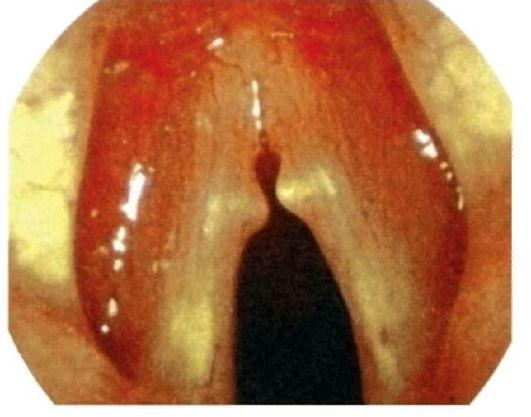

Хронические ларингиты и предраковые заболевания гортани
Хронический ларингит в национальном руководстве
Общие для острого и хронического ларингита этиология, диагностика, показания к консультациям и медикаментозное лечение по национальному руководству приведены в главе «Острые ларингиты и трахеит». Здесь — то, что руководство относит к хроническим формам.
Определения и синонимы
Хронический гиперпластический ларингит — хронический ларингит, характеризующийся диффузной гиперплазией слизистой оболочки гортани или ограниченной гиперплазией в виде узелков, грибовидных возвышений, складок или валиков.
Хронический отёчно-полипозный ларингит — полиповидная гиперплазия голосовых складок. Его часто называют полиповидной гипертрофией, полиповидной дегенерацией, полипозным ларингитом, отёком Рейнке и болезнью Рейнке — Гайека. по: Нац. руководство, 2016, с. 856
Коды по МКБ-10
Хронический ларингит кодируется так:
- J37 Хронический ларингит и ларинготрахеит.
- J37.0 Хронический ларингит.
- J37.1 Хронический ларинготрахеит.
по: Нац. руководство, 2016, с. 856
Эпидемиология
Хронические ларингиты составляют 8,4–10% всей патологии уха, горла и носа. Отёк Рейнке составляет 5,5–7,7% всех заболеваний гортани, приводящих к нарушениям фонации.
Профилактика и скрининг
Профилактика хронизации воспалительного процесса гортани заключается в своевременном лечении острого ларингита, гастроэзофагеальной рефлюксной болезни, инфекционных заболеваний верхних и нижних дыхательных путей, отказе от курения, соблюдении голосового режима.
Для выявления патологии уха, горла и носа необходимо регулярно проводить диспансерное обследование населения, а всем пациентам с охриплостью — ларингоскопию.
Патогенез
Хронический гиперпластический ларингит характеризуется гиперплазией эпителия слизистой оболочки гортани; патогенез заболевания неизвестен. Для хронических ларингитов характерно рецидивирующее течение. Их считают предраковыми заболеваниями. Наибольшая вероятность малигнизации — при гиперпластическом ларингите, сопровождающемся кератозом.
Клиническая картина
При хроническом ларингите развивается стойкое нарушение голосовой функции, иногда кашель, боль в горле при голосовой нагрузке. При отёчно-полипозном ларингите возможно развитие дыхательной недостаточности как следствие стеноза гортани третьей степени. Для отёка Рейнке характерны признаки гирсутизма у женщин, склонность к отёкам лица.
При длительно текущем ларингите развивается гипертрофия вестибулярного отдела гортани в связи с формированием ложноскладковой фонации.
Ларингоскопическая картина
Ларингоскопическая картина хронического ларингита разнообразна. В абсолютном большинстве случаев патология двусторонняя. Хронический катаральный ларингит характеризуется усилением сосудистого рисунка голосовых складок, их гиперемией, сухостью слизистой оболочки. При хроническом отёчно-полипозном ларингите внешний вид полиповидной дегенерации слизистой оболочки может варьировать от лёгкой веретенообразно-стекловидной опухоли (как «брюшко») до тяжёлого флотирующего полиповидного полупрозрачного серого или серо-розового студенистого утолщения, стенозирующего просвет гортани.
Для кандидозного ларингита характерны гиперемия и отёк слизистой оболочки, наличие белых фибринозных налётов. Различают опухолевидную, катарально-плёнчатую и атрофическую формы. При хроническом гиперпластическом ларингите отмечают наличие инфильтрации голосовых складок, очагов кератоза, гиперемии и пахидермии (гиперплазия слизистой оболочки в межчерпаловидной области). Кератоз — общее название дерматозов, характеризующихся утолщением рогового слоя эпидермиса. В случае гиперпластического ларингита это патологическое ороговение эпителия слизистой оболочки гортани в виде пахидермии, лейкоплакии и гиперкератоза. При атрофическом ларингите слизистая оболочка голосовых складок выглядит тусклой, возможно наличие вязкой мокроты, гипотонии голосовых складок и несмыкания их при фонации.
Микроларингостробоскопическое исследование при кератозе позволяет выявить участки спаянного с подлежащими слоями слизистой оболочки кератоза, наиболее подозрительного в плане малигнизации.
Дифференциальная диагностика с раком гортани
Дифференциальная диагностика хронического гиперпластического ларингита и рака гортани часто представляет большие трудности. При непрямой микроларингоскопии обращают внимание на характер сосудистого рисунка. Для рака гортани патогномонична атипия капилляров — увеличение их количества, извитая форма (в виде штопора), неравномерное расширение сосудов, точечные кровоизлияния. Сосудистый рисунок в целом хаотичен. Нарушение подвижности голосовой складки, односторонний характер процесса может свидетельствовать в пользу малигнизации хронического ларингита. Обращают на себя внимание и другие изменения голосовой складки — выраженная дисплазия, инфильтрация слизистой оболочки, образование очагов плотного, спаянного с подлежащими тканями кератоза и др. Окончательный диагноз при ларингите устанавливают по результатам гистологического исследования.
Хирургическое лечение
В случае хронического гиперпластического ларингита производят декортикацию голосовых складок и прицельную биопсию при прямой и непрямой микроларингоскопии.
При отёчно-полипозном ларингите возможны два хирургических вмешательства: декортикация голосовых складок по Kleinsasser и методика Hirano. При декортикации голосовых складок необходимо сохранить эпителий в области комиссуры с обеих сторон во избежание последующего их сращения и образования рубцовой мембраны или спайки. Суть методики Hirano: производят разрез вдоль латерального края голосовых складок, аспирируют массу, иссекают ножницами избыточную эпителиальную ткань, а оставшуюся укладывают на голосовую складку. Также используют лазерные методики.
Дальнейшее ведение
За больными, перенёсшими эндоларингеальные вмешательства, наблюдают до полного восстановления клинико-функционального состояния гортани в среднем 3 мес с периодичностью осмотров раз в неделю в первый месяц и раз в 2 недели, начиная со второго месяца. Пациентов с хроническим гиперпластическим ларингитом необходимо ставить на диспансерный учёт с осмотрами каждые 3 мес, при благоприятном течении — каждые полгода.
При хирургическом лечении хронических форм ларингита сроки нетрудоспособности составляют от 7 дней до месяца у лиц голосовых профессий при полной декортикации голосовых складок. Хронический гиперпластический ларингит считают предраковым заболеванием. по: Нац. руководство, 2016, с. 856–862
Хронические неспецифические ларингиты в руководстве Бабияка, Накатиса и Говоруна
Хронический неспецифический ларингит определён как поверхностное диффузное воспаление слизистой оболочки гортани с длительным течением и периодическими обострениями. Чаще им страдают взрослые мужчины, подверженные бытовым и профессиональным вредностям. В этиологии названы индивидуальная предрасположенность, факторы риска (курение, алкоголь, голосовая нагрузка) и активация условно патогенной флоры. Значение имеют очаги инфекции в верхних дыхательных путях и полости рта, хронический трахеобронхит, нарушение носового дыхания, эндокринные нарушения, аллергия. По преобладающему характеру воспаления различают катаральную, гипертрофическую и атрофическую формы.
Типичные жалобы: осиплость и быстрая утомляемость голоса, першение, сухость, постоянный кашель, более выраженный по утрам у курильщиков и работников вредных производств. Дисфония бывает лёгкой, появляясь к вечеру, или постоянной при органических изменениях голосовых складок.
При катаральном ларингите наблюдается диффузная гиперемия застойного характера, наиболее выраженная в области голосовых складок, слизистая оболочка местами покрыта вязким секретом, сосуды расширены, при сильном кашле возможны мелкоточечные кровоизлияния. При гипертрофическом ларингите голосовые складки утолщены, отёчны, с неровными краями; в межчерпаловидном пространстве видна пахидермия с бугристой серой поверхностью, препятствующая смыканию складок, голос становится грубым и быстро утомляется. Гиперплазия складок преддверия придаёт голосу грубый звук, подскладочная образует валики, дублирующие голосовые складки. К формам гипертрофического ларингита автор относит певческие узелки, контактную язву на уровне голосовых отростков черпаловидных хрящей, пролапс желудочка гортани, который может быть принят за опухоль, ретенционные и ложные кисты, полипозные образования, отёк Рейнке, папиллому с гиперкератозом. Эти формы требуют дифференциации с предраком и карциномой: односторонность изменений и «плюс ткань» говорят против простого воспаления, симметричность свидетельствует в пользу доброкачественного процесса.
Хронический атрофический ларингит встречается реже. Слизистая оболочка сухая, красновато-серая, истончённая, через неё просвечивают извитые сосуды, голосовые складки покрыты плотными жёлтыми или грязно-зелёными корками; при их отторжении остаются мелкие кровоизлияния. Больные постоянно покашливают, голос сиплый и быстро утомляется; в сухих помещениях симптомы усиливаются, во влажных ослабевают. Её дифференцируют с первичной озеной гортани, гипертрофические формы с туберкулёзом, третичным сифилисом, склеромой, папилломатозом, опухолями.
Хронические ларингиты в учебнике Пальчуна, Магомедова и Лучихина
Хроническое воспалительное заболевание слизистой оболочки и подслизистого слоя гортани и трахеи возникает под влиянием тех же причин, что и в случае с острыми заболеваниями: воздействие неблагоприятных бытовых, профессиональных, климатических, конституциональных и анатомических факторов. Иногда воспалительное заболевание с самого начала приобретает хроническое течение, например при болезнях сердечно-сосудистой и легочной систем. Различают следующие формы хронического воспаления в гортани: катаральный, атрофический, гиперпластический, диффузный или ограниченный, подскладочный ларингит и пахидермия гортани.
Хронический катаральный ларингит
Хроническое катаральное воспаление слизистой оболочки гортани (laryngitis chronica catarrhalis) — самая частая и наиболее легкая форма хронического воспаления. Основную этиологическую роль в данной патологии играет длительная нагрузка на голосовой аппарат (певцы, лекторы, учителя и т.д.). Важное значение имеет и воздействие неблагоприятных экзогенных факторов: климатических, профессиональных и вредных привычек.
Клиника
Наиболее частым признаком является охриплость, расстройство голосообразовательной функции гортани, быстрая утомляемость, изменение тембра голоса. В зависимости от выраженности болезни беспокоят также першения, сухость, ощущения инородного тела в гортани, кашель. Различают кашель курильщика, который возникает на фоне продолжительного курения и характеризуется постоянным, редким, несильным кашлем. При ларингоскопии определяется умеренная гиперемия, отечность слизистой оболочки гортани, больше в области голосовых складок, и выраженная инъецированность сосудов слизистой оболочки. Диагностика не представляет затруднений и основывается на характерной клинической картине, анамнезе и данных непрямой ларингоскопии.
Лечение
Необходимо устранить воздействие этиологического фактора, рекомендуется соблюдение щадящего голосового режима (исключить громкую и продолжительную речь). Лечение в основном носит местный характер. В период обострения эффективно вливание в гортань раствора антибиотиков с суспензией гидрокортизона: 4 мл изотонического раствора хлорида натрия с добавлением 150 000 ЕД пенициллина, 250 000 ЕД стрептомицина, 30 мг гидрокортизона. Этот состав вливают в гортань по 1–1,5 мл два раза в день. Этот же состав можно использовать для ингаляции. Курс лечения проводится в течение 10 дней. При местном использовании лекарственных препаратов можно менять антибиотики после посева на флору и выявления чувствительности к антибиотикам. Из состава можно исключить также гидрокортизон, а добавить химотрипсин или ацетилцистеин, обладающие секретолитическим и муколитическим эффектами. Благоприятно действует назначение аэрозолей для орошения слизистой оболочки гортани комбинированными препаратами, в состав которых входит антибиотик, анальгетик, антисептик (фузафунгин, лизаты бактерий). Применение масляных и щелочно-масляных ингаляций необходимо ограничивать, поскольку эти препараты отрицательно действуют на мерцательный эпителий, угнетая и полностью прекращая его функцию. Большая роль в лечении хронического катарального ларингита принадлежит климатотерапии в условиях сухого морского побережья. Прогноз относительно благоприятный при правильной терапии, которую периодически повторяют. В противном случае возможен переход заболевания в гиперпластическую или атрофическую формы. по: Пальчун, Магомедов, Лучихин, учебник, с. 367–369
Хронический гиперпластический ларингит
Хронический гиперпластический (гипертрофический) ларингит (laryngitis chronica hyperplastica) характеризуется ограниченной или диффузной гиперплазией слизистой оболочки гортани. Различают следующие виды гиперплазии слизистой гортани:
- фиброзные узелки голосовых складок (певческие узелки);
- пахидермия гортани;
- хронический подскладочный ларингит;
- выпадение, или пролапс, морганиева желудочка.
по: Пальчун, Магомедов, Лучихин, учебник, с. 369
Клиника
Основной жалобой больного является различной степени выраженная стойкая охриплость, утомляемость голоса, иногда афония. При обострениях больного беспокоят першение, ощущение инородного тела при глотании, редкий кашель со слизистым отделяемым. Диагностика. Непрямая ларингоскопия и стробоскопия позволяют обнаружить ограниченную или диффузную гиперплазию слизистой оболочки, наличие густой слизи как в межчерпаловидном, так и в других отделах гортани. При диффузной форме гиперпластического процесса слизистая оболочка утолщена, пастозна, гиперемирована; края голосовых складок утолщены и деформированы на всем протяжении, что препятствует их полному смыканию. При ограниченной форме (певческие узелки) слизистая оболочка гортани розового цвета без особых изменений; на границе между передней и средней третями голосовых складок на их краях расположены симметричные образования в виде соединительнотканных выростов (узелков) на широком основании диаметром 1–2 мм. Иногда узелок имеется только на одной голосовой складке. Эти узелки препятствуют полному смыканию голосовой щели, в результате чего голос становится хриплым. При пахидермии гортани в межчерпаловидном пространстве слизистая оболочка утолщена, на ее поверхности имеются эпидермальные ограниченные выросты, внешне напоминающие мелкую бугристость, могут быть грануляции на задней трети голосовых складок и межчерпаловидном пространстве. В просвете гортани имеется скудное вязкое отделяемое и местами корки. Выпадение (пролапс) морганиева желудочка возникает в результате длительного перенапряжения голоса и воспалительного процесса слизистой оболочки желудочка. При форсированном выдохе, фонации, кашле гипертрофированная слизистая оболочка выступает из желудочка гортани и частично прикрывает голосовые складки, препятствуя полному смыканию голосовой щели, обусловливая хриплое звучание голоса. Хронический подскладочный ларингит при непрямой ларингоскопии напоминает картину ложного крупа, при этом имеется гипертрофия слизистой оболочки подголосового пространства, суживающая голосовую щель. Анамнез и эндоскопическая микроларингоскопия и биопсия позволяют уточнить диагноз.
Дифференциальная диагностика
Ограниченные формы гиперпластического ларингита необходимо дифференцировать с специфическими инфекционными гранулемами, а также с новообразованиями. Соответствующие серологические реакции и биопсия с последующим гистологическим исследованием помогают в постановке диагноза. Клинический опыт показывает, что специфические инфильтраты не имеют симметричной локализации, как при гиперпластических процессах.
Лечение
Необходимо устранение воздействия вредных экзогенных факторов и обязательное соблюдение щадящего голосово-
Необходимо устранение воздействия вредных экзогенных факторов и обязательное соблюдение щадящего голосового режима. В периоды обострения проводится лечение, как при остром катаральном ларингите. При гиперплазии слизистой оболочки производится точечное туширование пораженных участков гортани через 2–3 дня 10–20% раствором серебра нитрата в течение 2 нед. Значительная ограниченная гиперплазия слизистой оболочки является показанием к эндоларингеальному ее удалению с последующим гистологическим исследованием биоптата. Операция производится с использованием местной аппликационной анестезии лидокаином 10%, кокаином 2%, тетракаином 2%. В настоящее время такие вмешательства производятся с использованием эндоскопических эндоларингеальных методов.

Хронический атрофический ларингит
Хронический атрофический ларингит (laryngitis chronica atrophica) — заболевание в изолированной форме, встречается редко. Причиной развития атрофического ларингита является чаще всего атрофический ринофарингит. Условия окружающей среды, профессиональные вредности (запыленность, загазованность горячий воздух и др.), болезни желудочно-кишечного тракта, отсутствие нормального носового дыхания способствуют развитию атрофии слизистой оболочки гортани.
Клиника
Ведущими жалобами при атрофическом ларингите являются ощущение сухости, першения в гортани и ощущение инородного тела в гортани, а также дисфония различной степени выраженности. При откашливании в мокроте могут быть прожилки крови вследствие нарушения целостности эпителия слизистой оболочки в момент кашлевого толчка. При ларингоскопии слизистая оболочка истончена, гладкая, блестящая, местами покрыта вязкой слизью и корками. Голосовые складки несколько истончены. При фонации смыкаются не полностью, оставляя щель овальной формы, в просвете которой также могут быть корки.
Лечение
Рациональная терапия включает устранение причины заболевания. Необходимо исключить курение, употребление раздражающей пищи. Следует соблюдать щадящий голосовой режим. Из лекарственных препаратов назначают средства, способствующие разжижению мокроты, легкому ее отхаркиванию: орошения глотки и ингаляции изотоническим раствором хлорида натрия (200 мл) с добавлением 5 капель 10% настойки йода. Процедуры проводятся по 2 раза в день, используя на сеанс 30–50 мл раствора, длительными курсами в течение 5–6 нед. Периодически назначают ингаляции 1–2% раствором ментола в масле. Масляный раствор ментола 1–2% можно вливать в гортань ежедневно в течение 10 дней. Для усиления деятельности железистого аппарата слизистой оболочки назначают 30% раствор йодида калия по 8 капель 3 раза в день внутрь в течение 2 нед (перед назначением необходимо выяснить переносимость йода). При атрофическом процессе одновременно в гортани и носоглотке хороший эффект дает подслизистая инфильтрация в боковые отделы задней стенки глотки раствора прокаина и алоэ (2 мл 1% раствора прокаина с добавлением 2 мл алоэ). Состав инъецируют под слизистую глотки по 2 мл в каждую сторону одновременно. Инъекции повторяют с промежутками в 5–7 дней; всего 7–8 процедур. по: Пальчун, Магомедов, Лучихин, учебник, с. 369–373
Хронические ларингиты в учебнике Пальчуна для колледжей
Хронический катаральный ларингит
Хронический катаральный ларингит в большинстве случаев развивается вследствие острого воспаления слизистой оболочки гортани. У лиц, профессия которых связана с нагрузкой на голосовой аппарат (певцы, чтецы, лекторы и др.), основную этиологическую роль в данной патологии играет длительное его перенапряжение. Имеют значение профессиональные факторы (запыленность, загрязненность помещений).
Клиническая картина
Постоянный признак — расстройство голосообразовательной функции гортани в виде быстрой утомляемости голоса и различной степени охриплости. Жалобы больных сводятся также к сухости, постоянному ощущению инородного тела в гортани, что вызывает покашливание или кашель. Ларингоскопически определяют застойную гиперемию слизистой оболочки гортани, более выраженную в области обеих голосовых складок; нередко на таком фоне видны расширенные кровеносные сосуды, местами на стенках гортани скапливается слизь.
Лечение
Устранение этиологического фактора, соблюдение больным голосового режима, применение местной терапии в виде вливания в гортань раствора антибиотиков с суспензией гидрокортизона (4 мл изотонического раствора хлорида натрия + 150 000 ЕД бензилпенициллина + 250 000 ЕД стрептомицина + 25 мг гидрокортизона в эмульсии). Этот состав вливают в гортань по 1,5–2 мл один или два раза в день; его же используют для ежедневных ингаляций. Курс лечения продолжают 10 дней. После такого курса лечения при необходимости можно провести ингаляции 2% масляным раствором цитраля, по 1–2 ингаляции ежедневно в течение 10 дней.
Хронический гиперпластический ларингит
Хронический гиперпластический ларингит характеризуется разного рода гиперплазией слизистой оболочки гортани; по распространенности различают ограниченную и диффузную формы заболевания. Основная жалоба — охриплость или даже афония, что обусловлено обычно неравномерным утолщением голосовых складок, ограничением их подвижности и неправильной фонацией вестибулярными складками. При обострениях присоединяются симптомы катарального ларингита. Непрямая и прямая ларингоскопия позволяют обнаружить гипертрофию слизистой оболочки, как правило, симметричную с обеих сторон гортани и в межчерпаловидном пространстве в виде поперечного валика с зазубренным краем, выстоящего в просвет гортани. Нередко образуются один или два небольших остроконечных или округлых выступа величиной 1–2 мм, расположенных на свободных краях. Это так называемые гиперпластические узелки. Они не относятся к истинным опухолям и представляют собой фиброзное образование. Такие утолщения могут возникать и поодиночке на том или ином участке голосовой складки.
Лечение
Предусматривают в первую очередь устранение всех вредных факторов и обязательное соблюдение щадящего голосового режима. В периоды обострений проводят лечение, как при остром катаральном ларингите. При значительной гиперплазии слизистой оболочки проводят туширование пораженных участков через день 1–2% раствором серебра нитрата в течение 2 нед. Прогноз в плане существенного улучшения, как правило, благоприятный.
Хронический атрофический ларингит
Чаще всего хронический атрофический ларингит этиологически и патогенетически связан с атрофией слизистой оболочки носа и глотки; в ряде случаев он развивается после перенесенной дифтерии или скарлатины. Условия запыленности и загазованности окружающей среды способствуют развитию атрофии слизистой оболочки гортани, так же как курение и злоупотребление алкоголем. Больные жалуются на ощущение сухости, першения, инородного тела, прогрессирующую дисфонию. В начале процесса при ларингоскопии определяют яркую гиперемию слизистой оболочки, которая выглядит блестящей. Гиперемия в дальнейшем исчезает, появляются вязкий секрет, корки темно-зеленого цвета в гортани. При откашливании в мокроте бывают прожилки крови вследствие нарушения целости эпителия слизистой оболочки гортани в момент кашлевого толчка. Прогноз при систематическом лечении часто благоприятный, хотя излечения добиться трудно.
Лечение
Рациональная терапия включает выявление и устранение причины заболевания. Больному рекомендуют исключить курение и сильно раздражающую пищу, соблюдать щадящий голосовой режим. Из лекарственных веществ назначают средства, способствующие разжижению мокроты и легкому ее отхаркиванию: орошения глотки и ингаляции изотоническим раствором хлорида натрия (200 мл раствора + 5 капель настойки йода) проводят 2 раза в день (на процедуру затрачивают 30–50 мл раствора) длительными курсами в течение 5–6 нед и больше. Эти процедуры больной может проводить дома утром и вечером. Щелочно-масляные ингаляции назначают на 3–5 дней лишь в одном случае — при вязкой слизи и корках в гортани. Периодически назначают ингаляции раствором ментола в масле; ежедневно в течение 10 дней этот же препарат можно вливать в гортань (ментол оказывает небольшое раздражающее и слабое дезинфицирующее действие, поэтому нужно учитывать его индивидуальную переносимость). При атрофическом процессе одновременно в гортани и глотке хороший эффект дает подслизистая инфильтрация в боковые отделы задней стенки глотки раствора прокаина и алоэ (2 мл 2% раствора прокаина + 2 мл алоэ, состав инъецируют по 2 мл в каждую сторону одновременно; инъекции повторяют один раз в неделю, всего 8 инъекций). Для усиления деятельности железистого аппарата слизистой оболочки назначают раствор йодида калия по 8 капель 3 раза в день внутрь в течение 2 нед (перед назначением необходимо выявить переносимость йода). по: Пальчун, учебник для колледжей, с. 180–183
Хронический ларингит у детей в руководстве Богомильского и Чистяковой
Распространенность хронического ларингита составляет 8,4% всех заболеваний ЛОР-органов у детей. Чаше встречается у мальчиков в возрасте от 4 до 10 лет.
Этиология
Развитию заболевания способствуют повторяющиеся острые ларингиты, постоянное ротовое дыхание, распространение воспалительного процесса в слизистой оболочке при хронических ринофарингитах, синусите, хроническом тонзиллите, длительное и чрезмерное напряжение голоса, особенно в период мутации и после инфекции верхних дыхательных путей, вдыхание дыма, пыли, паров, газов и другие раздражающие факторы. К ларингиту приводят длительный напряженный кашель при хронических заболеваниях ни жних дыхательных путей (хронический трахеобронхит, хроническая неспецифическая пневмония, туберкулез, аденопатия бронхиальных желез), застойные изменения слизистой оболочки при сердечно-сосудистых, заболеваниях, наклонность к аллергическим реакциям, влажный холодный климат или высокая температура и запыленность воздуха. Более частые хронические заболевания гортани у детей, посещающих детские учреждения, объясняются повышенной голосовой нагрузкой в сочетании с психоэмоциональным фактором.
Клиническая характеристика
Основным симптомом при хроническом ларингите является дисфония (изменение голоса от небольшой охриплости до периодической афонии). Сначала голос теряет силу, высоту, становится хриплым, что более выражено по утрам, когда при кашле освобождаются дыхательные пути от накопившейся мокроты. Днем голос становится несколько чище и снова грубеет к вечеру. Больных беспокоят неприятные ощущения в области гортани, кащель, интенсивность которого зависит от количества выделяемой мокроты. На общее состояние болезнь не влияет. Различают 3 основные формы хронического ларингита: катаральную, гипертрофическую и атрофическую. Хронический катаральный ларингит — самая частая и самая легкая форма хронического воспаления гортани у детей. Характеризуется нарушением местного кровообращения с выраженными явлениями венозного стаза, мелкоклеточной инфильтрацией, очаговой метаплазией цилиндрического эпителия голосовых складок в многослойный плоский. Голосовые складки смыкаются не полностью, на них видны расширенные кровеносные сосуды и вязкая слизь. Иногда присоединяется парез голосовой и поперечной черпаловндной мышц. Вестибулярные складки изменены: уплотнены, гиперемированы. отечны, иногда закрывают голосовые складки, препятствуя правильному голосообразованию; слизистые железы увеличены. Больные жалуются на охриплость, повышенную утомляемость голоса, першение в горле, частое покашливание с выделением слизистой мокроты. Во время обострения хронического ларингита все явления усиливаются. При ларингоскопии определяются гиперемия различной выраженности и утолщенность слизистой оболочки. Прогноз благоприятный при условии своевременного лечения. Хронический гипертрофический ларингит — разрастание как эпителиального слоя, так и подслизистой ткани. Различают диффузную и ограниченную формы заболевания. При диффузной форме имеется равномерное утолщение слизистой оболочки гортани, больше выраженное в области голосовых складок. Слизистая оболочка имеет серовато-красный или серый цвет. Иногда голосовые складки прикрыты гиперплазированными вестибулярными складками. При микроскопии определяются гипертрофия слизистой оболочки, иногда граничащая с гиперплазией; круглоклеточная инфильтрация, расширение сосудов, эпителиальная метаплазия, изменение секреции. Изменение голоса более стойкое, нежели при катаральном ларингите. При гипертрофии складок преддверия отмечается увеличение их с одной или с обеих сторон, они частично или полностью прикрывают голосовые складки. В некоторых случаях наблюдается особый вид хронического гипертрофического подскладочного ларингита, при котором под голосовыми складками параллельно им образуются валики гиперплазированной слизистой оболочки. Ограниченная форма проявляется в виде узелков голосовых складок, пахидермии, выпадения слизистой оболочки гортанного желудочка. Узелки голосовых складок — небольшие симметричные бугорки (ограниченные уплотнения), расположенные на свободном крае голосовых складок на границе передней и средней трети, имеют широкое основание, представляют собой фибриноидно-гиалиновые образования, реже очаговую гиперплазию многослойного плоского эпителия. Среди причин охриплости у детей узелки голосовых складок («узелки крикунов») занимают первое место (60%), наблюдаются у много и сильно кричащих детей, возникают в результате чрезмерного напряжения голоса и хронической травматизации. Наибольшее число больных выявляют в возрасте 7-10 лет, в период особенно интенсивного психомоторного развития и значительной нагрузки на голосовой аппарат. В начале болезни такой бугорок образуется на одной складке. В последующем травматизация вызывает симметричный бугорок на второй складке . В выраженных случаях узелки доходят до размера булавочной головки. Голосовые складки при фонации не могут плотно смыкаться, между ними образуется щель, влияющая на голос. В клинической картине наблюдаются сначала голосовая усталость, затем стойкая охриплость. После сна она выражена меньше, к концу дня усиливается в связи с перенапряжением голоса. Затрудненного дыхания не бывает. Окончательный диагноз устанавливают при ларингоскопии. При дифференциальной диагностике необходимо иметь в виду возможность специфических гранулем и опухоли. Пахидермия — утолщение задних отделов голосовых складок и слизистой оболочки в межчерпаловидном пространстве, исчезающее при глубоком спокойном дыхании, а также лейкоплакии и кератоз, возникающие в области голосовых отростков черпаловидных хрящей, гипертрофия слизистой оболочки желудочка гортани с выпадением его по направлению к средней линии во время дыхания. Во время фонации инфильтрированная слизистая оболочка частично закрывает голосовую складку. Гистологически выявляется мощная папиллярная и тяжистая гиперплазия покровного эпителия в сочетании с воспалением, реактивной пролиферацией и огрубением подлежащей соединительной ткани. При гиперкератозах утолщаются зернистый и роговой слои. Клиническая картина включает резко выраженную охриплость вплоть до афонии из-за неполного смыкания голосовых складок и вязкого отделяемого в межчерпаловидном пространстве. Изменение голоса более стойкое и прогноз в отношении его полного восстановления при этой форме хронического ларингита менее благоприятен, чем при катаральной. Хронический атрофический ларингит наблюдается у детей старшего возраста, обусловлен атрофией вследствие потери железистого аппарата, истончением слизистой оболочки гортани, которая покрыта густой вязкой слизью и присохшими корками. Обычно атрофический процесс в гортани сопутствует такому же процессу в носу и глотке. Возможно формирование атрофического процесса после язвенно-некротического поражения гортани. Развитию заболевания способствуют патология желудочно-кишечного тракта, сердечно-сосудистой системы, хронический бронхит, хронический нефрит, эндокринные заболевания, нарушение углеводного обмена. Больные жалуются на неловкость и ощущение сухости, инородного тела в горле, упорное першение, охриплость, слабость голоса, иногда афонию. При озене часто имеются корки в гортани и трахее. При их скоплении в просвете гортани возможно затруднение дыхания. Охриплость больше выражена утром, после откашливания мокроты голос улучшается. При ларингоскопии видна бледная, сухая слизистая оболочка гортани, голосовые складки истончены, дряблые, при фонации смыкаются не полностью. Диагностика нетрудна, диагноз устанавливается на основании данных анамнеза, клинических симптомов и ларингоскопической картины. Широко используют стробоскопию и микроларингоскопию.
Дифференциальная диагностика
Хронический ларингит следует дифференцировать с опухолями и инфекционными гранулемами.
Лечение
В случае катарального и атрофического ларингита лечение симптоматическое. Устраняют причину заболевания. Назначают щадящий голосовой режим, устраняют голосовую нагрузку. Проводят ингаляции или орошение с использованием разных растворов. Это щелочные растворы, 0,25–0,5% раствор ментола в персиковом масле с добавлением эвкалиптового масла и хлорэтона (у детей старше 5 лет), бальзамические или сероводородные препараты. Показаны смазывание слизистой оболочки гортани 0,25% раствором йода или йодида калия в глицерине. 2% раствором колларгола, орошение голосовых складок 1% раствором протаргола в глицерине или 0,25-0,5% раствором таннина. В гортань вливают 1-1,5 мл 0,5-1% раствора ментола в персиковом масле. Для улучшения местного кровообращения применяют соллюкс, УВЧ, диатермию на шею в области гортани, грязелечение и массаж. Большое значение имеют восстановление носового дыхания, лечение заболеваний глотки и околоносовых пазух, воспалительных процессов в нижних дыхательных путях, проведение дыхательных и голосовых упражнений, фонопедические приемы. При атрофическом ларингите проводят стимулирующую терапию (аутогемотерапия, пелоидотерапия и тканевая терапия). Ограниченные гиперплазии («узелки крикунов», пахидермии) удаляют под контролем микроскопа с помощью микроинструментов на толщину эпителиального покрова. Применяют криодеструкцию, ультразвуковую дезинтеграцию и устранение образований с помощью лазера. Для успешной реабилитации голосовой функции необходимы ранняя диагностика, своевременное лечение с участием логопеда и психотерапевта.
Профилактика
При хроническом ларингите проводят санацию носа и носоглотки, закаливание организма, детей обучают правильному пользованию голосом и адекватному дыханию. по: Богомильский, Чистякова, с. 400–404
Формы хронического ларингита в сравнении
Книги выделяют одни и те же основные формы хронического ларингита. Таблица сводит, чем они различаются по жалобам, ларингоскопической картине и лечению; в первом столбце — форма, во втором — ведущая жалоба, в третьем — что видно при ларингоскопии, в четвёртом — основа лечения.
Таблица 1. Формы хронического ларингита (составлено по: Нац. руководство, 2016, с. 858–861; Пальчун, Магомедов, Лучихин, учебник, с. 368–373; Пальчун, учебник для колледжей, с. 180–183)
| Форма | Ведущая жалоба | Ларингоскопия | Лечение |
|---|---|---|---|
| Катаральный | Охриплость, быстрая утомляемость голоса, першение, кашель | Застойная гиперемия, больше в области голосовых складок, расширенные сосуды, слизь | Устранение причины, голосовой режим, вливания в гортань и ингаляции |
| Гиперпластический (диффузный и ограниченный) | Стойкая охриплость, иногда афония | Утолщение складок, пахидермия в межчерпаловидном пространстве, певческие узелки, очаги кератоза | Голосовой режим; при значительной гиперплазии — эндоларингеальное удаление с гистологическим исследованием, декортикация; диспансерный учёт |
| Отёчно-полипозный (болезнь Рейнке — Гайека) | Стойкое нарушение голоса, возможна дыхательная недостаточность | Веретенообразное стекловидное или флотирующее студенистое утолщение голосовых складок | Декортикация по Kleinsasser или методика Hirano, лазерные методики |
| Атрофический | Сухость, першение, ощущение инородного тела, дисфония | Истончённая, блестящая или тусклая слизистая оболочка, вязкая слизь, корки, неполное смыкание складок | Устранение причины, увлажняющие ингаляции и орошения, длительными курсами |
Источники
- Оториноларингология: национальное руководство / под ред. В. Т. Пальчуна. — 2-е изд., перераб. и доп. — М.: ГЭОТАР-Медиа, 2016. — Гл. 13, раздел «Острый и хронический ларингиты» (Романенко С. Г.): с. 856–862.
- Бабияк В. И., Накатис Я. А., Говорун М. И. Оториноларингология. Руководство. Т. 2. — СПб.: Питер, 2009. — Часть IV, гл. 20 «Болезни гортани»: хронические неспецифические ларингиты — с. 110–118.
- Пальчун В. Т., Магомедов М. М., Лучихин Л. А. Оториноларингология: учебник. — Гл. 4 «Заболевания гортани, трахеи и пищевода», раздел 4.5 «Хронические воспалительные заболевания гортани»: с. 367–373, рис. 4.11.
- Пальчун В. Т., Лучихин Л. А., Крюков А. И. Болезни уха, горла и носа: учебник для медицинских колледжей. — 2-е изд. — М.: ГЭОТАР-Медиа, 2010. — Гл. 8 «Заболевания гортани», разделы 8.8–8.10: с. 180–183.
- Богомильский М. Р., Чистякова В. Р. Детская оториноларингология. — М.: ГЭОТАР-МЕД, 2002. — Гл. 5: «Хронические воспалительные заболевания гортани. Хронический ларингит» — с. 400–404.
Раздел «Учебник» — справочная теория, не клинические рекомендации. Тактика ведения пациента — по разборам КР.